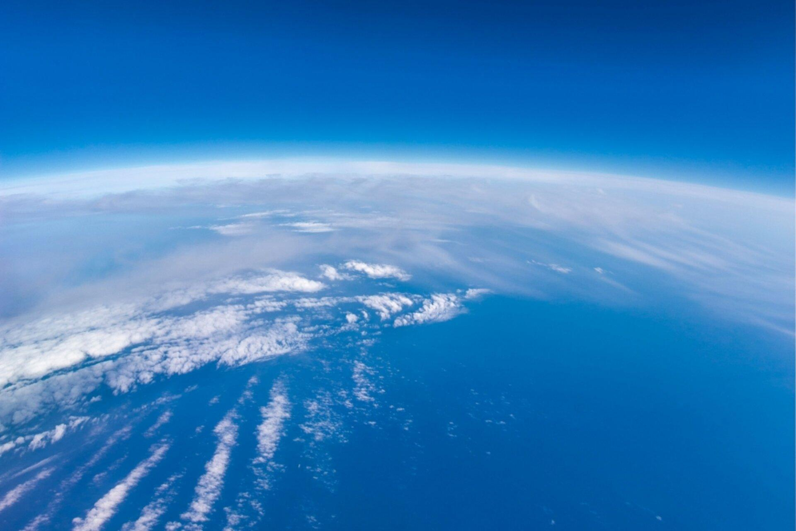

Representação
O nitrogênio é representado pelo símbolo N e possui número atômico 7.
Presente em grande quantidade na atmosfera terrestre, o nitrogênio é um elemento químico fundamental para os seres vivos e para diversas atividades industriais. Ele participa da formação de proteínas, do crescimento das plantas e da fabricação de fertilizantes.
Saiba maisSímbolo químico: N

O nitrogênio foi descoberto no final do século XVIII, sua descoberta é geralmente creditada a Daniel Rutherford, um químico escocês, embora tenha sido isolado independentemente por outros pesquisadores. Ele isolou o nitrogênio pela primeira vez ao remover oxigênio e dióxido de carbono do ar atmosférico, percebendo que um gás inerte permanecia.
Rutherford chamou esse gás de “ar residual”, mas ele logo foi renomeado como nitrogênio por Jean Antoine-Claude Chaptal, um químico francês, em 1779, quando se descobriu que o elemento era um constituinte do ácido nítrico e nitratos. O nome vem do grego nitron e gene, que significa “o que forma salitre”.
Conheça as propriedades que fazem desse elemento uma parte essencial da natureza e da indústria.
O nitrogênio é representado pelo símbolo N e possui número atômico 7.
Pertence ao grupo 15 e ao segundo período da tabela periódica, sendo classificado como um ametal.
É um gás incolor, inodoro e insípido à temperatura ambiente. Na atmosfera, encontra-se principalmente na forma de moléculas N₂.
O nitrogênio gasoso é pouco reativo em condições ambientes. Em estado líquido, atinge temperaturas muito baixas e pode ser usado em processos de refrigeração.
O nitrogênio está presente principalmente na atmosfera terrestre, correspondendo a aproximadamente 78% do ar. Ele também faz parte do solo, da água e dos organismos vivos, participando do ciclo natural do nitrogênio.
Na natureza, plantas absorvem compostos nitrogenados do solo, enquanto os animais obtêm nitrogênio por meio da alimentação. Bactérias também desempenham um papel importante na transformação desse elemento em formas que podem ser utilizadas pelos seres vivos._
Combustíveis (principalmente de aeronaves)
Lâmpadas
Preservação de alimentos
Diminuição de risco de incêndio
Na agricultura, o nitrogênio sustenta a produção em larga escala de alimentos no mundo por meio de fertilizantes e da nutrição de lavouras.
O nitrogênio é essencial à vida e faz parte de todas as proteínas de plantas e animas, promovendo a circulação do gas por meio do ciclo do nitrogênio.
O uso elevado do nitrogênio como fertilizante pode levar ã poluição, causando mudanças climáticas, criando zonas mortas no oceano e causar a proliferação de algas tóxicas nos ecossistemas marinhos.
Agradecemos aos professores pelo apoio, pelas orientações e pelos conhecimentos compartilhados durante o desenvolvimento deste projeto.

Professor Orientador - PW2

Professora Orientadora - Química